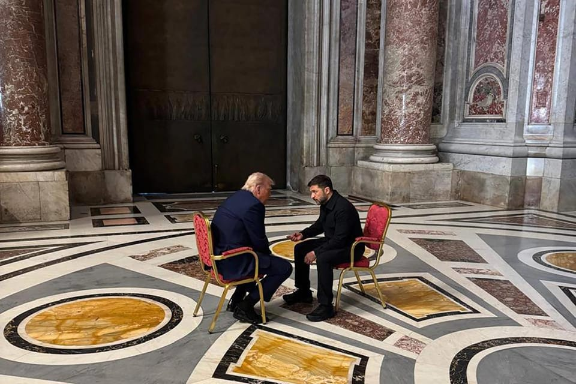

世界苦茶04月27日新闻 | 42条 | 中国结婚对数再次下降

中国结婚对数再次下降 | 台爆发反绿的游行 | 特朗普与泽连斯基在梵蒂冈会面 | 伊朗港口产生巨大爆炸 | OpenAI顶尖研究员绿卡被拒 | 哈马斯寻求五年停火协议
三个水枪手
苦茶数据
美元兑人民币：7.28（昨日7.28，前日7.29）
美元兑日元：143.96（昨日142.95，前日142.63）
上证指数：休市（昨日3295，前日3303）
标普500指数：休市（昨日5525，前日5484）
比特币：94416（昨日94918，前日93149）
布伦特原油：66.87（昨日66.88，前日66.03）
中国新闻
• 小特朗普劝欧洲远离中国 ：美国总统特朗普长子小特朗普星期五在布达佩斯的一场商业论坛上说，匈牙利和整个欧洲地区应选择美国作为经济合作伙伴，而非中国。小特朗普目前正在进行一场名为“特朗普商业愿景2025”的巡回演讲。他星期五晚在一场与匈牙利企业家的闭门会议上说，比起俄罗斯，中国对欧洲地区构成的威胁更大。不过，他呼吁远离中国的言论很可能让匈牙利和东欧其他地区感到不自在，因为这些国家已向中国投资开放经济。
• 东京大学教授尚睿回国任教 ：日本东京大学化学教授尚睿将回到中国，加盟位于浙江省的西湖大学筹建实验室，从事可持续催化与功能分子领域研究。香港《南华早报》报道，尚睿在前往日本深造前，在中国科学技术大学完成本硕博学业，之后赴东京大学继续学术研究。他在2020年晋升为副教授，去年晋升为特聘教授。东京大学官网信息显示，尚睿的主要研究领域包括合成有机化学、催化、材料科学及太阳能电池等领域，目前他的研究方向是基于可持续催化的有机合成化学以及有机光电功能材料的开发。
• 中国人涉窃韩军事机密被捕 ：韩国媒体报道，一名中国人涉窃取韩国军事机密，在韩国被起诉。据韩联社消息，韩国首尔中央地方检察厅星期五称，以违反《军事机密保护法》为由，逮捕起诉企图窃取韩国军事情报的中国人A某。韩国检方称，涉案中国人与中国情报机关人士合谋，自去年5月至今年3月期间，先后五次接触韩国现役军人，试图获取军事机密。
• 香港招收非本地生人数激增 ：香港教育局局长蔡若莲说，美国的教育政策和签证限制使香港学府招收的非本地生激增，还有更多顶尖教授选择离开美国到港执教。综合香港《明报》《星岛日报》报道，蔡若莲星期六在电台节目《政经星期六》受访时说，由于美国政府对留学生签证和修读学科的限制，不少中国大陆和海外学生更倾向到香港读书，选择留美的香港学生减少。她说，随着香港八大院校招收非本地生的限额放宽至40%，留学生招收数量大幅增长，反映出香港教育的国际竞争力。
• 习近平访艾奥瓦40周年纪念 ：中国国家主席习近平首次访问美国艾奥瓦州40周年纪念活动在艾奥瓦州首府得梅因举行。据新华社消息，由美国艾奥瓦州友好委员会主办的习近平首访艾奥瓦州40周年纪念活动，当地时间星期四在得梅因举行。报道称，中国人民对外友好协会，河北省及石家庄市、正定县人民政府代表应邀出席，习近平在艾奥瓦州的老朋友及各界友好人士约150人出席活动。现场氛围热烈友好。
• 习近平谈AI发展要自立自强 ：中共总书记、中国国家主席习近平谈人工智能时表示，面对新一代人工智能技术快速演进的新形势，要充分发挥新型举国体制优势，坚持自立自强，突出应用导向。他还表示，在基础理论和核心技术的短板弱项，要正视差距、加倍努力。据新华社，中共政治局星期五就加强人工智能发展和监管进行第二十次集体学习，习近平主持，中国西安交通大学教授郑南宁讲解。讲解后，习近平发表讲话。习近平表示中国人工智能综合实力近年来得到整体性、系统性跃升。但他也指出，在基础理论、关键核心技术等方面还存在短板弱项。
• 中方批美限制外交人员自由 ：中国常驻联合国副代表耿爽批评美国出于一己之私，频繁对特定国家的外交人员拒发签证、限制旅行自由，做法违反外交礼节。据中国央视新闻，耿爽当地时间星期五在联合国东道国关系委员会会议上发言指出，一段时间以来，美国频繁对特定国家的外交人员拒发签证、限制旅行自由，严重影响有关国家正常有效参与联合国工作，敦促美方积极履行东道国义务。耿爽指出，美方做法违反外交礼节。
• 香港禁烟范围扩大罚款翻倍 ：为了进一步降低吸烟率，香港特区政府将由明年起在更多公共场所设立禁烟区，并把违例吸烟的罚款金额提高一倍至3000港元。相关条例草案星期五刊宪，列明从明年元旦起，禁止在等候公共交通工具、等候进入电影院、医院、公众游乐场地、体育场等地方的划定范围吸烟。违者罚款由1500港元倍增至3000港元。条例也建议把禁烟范围扩大至幼儿中心、医院、卫生署诊所或健康中心和院舍的出入口三米范围内。
• 中国结婚登记数再下降 ：中国今年第一季度全国结婚登记181万对，数量比2024年第一季度进一步下降。中国民政部官网发布的《2025年1季度民政统计数据》显示，今年一季度，全国结婚登记181万对，离婚登记63万对。2024年一季度，全国结婚登记196.9万对，离婚登记57.3万对。相较而言，今年一季度结婚登记数减少了15.9万对，离婚登记数增加了5.7万对。
亚太印太新闻
• 台反绿共集会引安全警报 ：台湾两大在野党将在台北凯达格兰大道举办抗议行动，但一名抖音网红宣称要在游行现场制造混乱，并喊话大陆解放军伺机行动“收尾”，台湾警方已对此展开调查。综合台湾《联合报》和ETtoday新闻云报道，国民党和民众党星期六将在总统府前的凯达格兰大道举办“反绿共，战独裁”活动，台北市长蒋万安、台中市长卢秀燕等15名县市长和国民党立委全面动员，立法院长韩国瑜和前总统马英九也将与会。一名自称住在屏东的抖音网红“中国台湾刘导演”星期三拍摄视频，宣称自己将出席这场集会。他称，民进党实在太过分，只有一个词能解决现状，就是“革命”。
• 马英九批赖清德无能独裁 ：台湾前总统马英九出席台北凯达格兰大道集会时，猛批总统赖清德无能、不当和独裁，并呼吁民众用选票反罢免，对赖清德投下不信任票。综合台湾《联合报》《中国时报》报道，马英九发表致辞时说，今天他是以75岁“中华民国卸任总统”的身份，抗议66岁的现任总统，因为赖清德涉嫌“违宪、独裁与卖台的言行”，会让台湾快速沉沦。马英九猛批，美国祭出关税大刀时赖清德束手无策，这不就是无能吗？赖清德将台积电奉送给美国，这不就是不当吗？赖清德政府用不当手段对付民众党前主席柯文哲，这不就是独裁吗？
• 日本PFAS污染超标520倍 ：日本环境部最新公布的一项全国水质测定结果显示，242个河川和地下水检测点的有机氟化合物超标，其中最高一处是国家标准的520倍。新华社报道，日本环境部星期五发布的测定结果是基于对2078个河川和地下水检测点的有机氟化合物测定。结果显示，河川的56个检测点和地下水的186个检测点有机氟化合物超标。其中最高值出现在大阪府摄津市的一处地下水，每升水含全氟辛烷磺酸和全氟辛酸共2.6万纳克，是日本国家标准限量的520倍。PFAS是全氟烷基和多氟烷基化合物等多种有机氟化合物的总称，广泛应用于多种工业产品。PFAS不易分解，其中的某些物质被证明会在环境和人体中积累，导致健康问题。
• 金正恩出席新驱逐舰下水 ：朝中社星期六报道，朝鲜领袖金正恩携女儿金珠爱出席了一艘新型多用途驱逐舰的下水仪式。朝鲜劳动党中央委员会书记赵春龙说，这艘被命名为“崔贤”号的5000吨级军舰装备了最强大的武器，并完全依靠朝鲜自身的力量和技术，在约400天内建造完成。金正恩说，这艘驱逐舰将并于明年初交付海军。
• 巴基斯坦呼吁对克什米尔袭击事件进行中立调查，印度指责其为幕后黑手： 周六，巴基斯坦呼吁对克什米尔地区发生的、导致多名印度游客遇害的袭击事件进行“中立”调查。新德里方面指责此次袭击是伊斯兰堡策划的，而巴基斯坦表示愿意配合调查，并重申其支持和平立场。印度方面已确认三名嫌疑武装分子中的两人是巴基斯坦人，但伊斯兰堡否认与周二导致25名印度游客和1名尼泊尔游客遇难的袭击事件有任何关联。“巴基斯坦完全愿意与任何中立调查人员合作，以确保真相大白，伸张正义，”巴基斯坦内政部长莫欣·纳克维表示。他在新闻发布会上说：“巴基斯坦依然致力于和平、稳定与遵守国际规范，但在主权问题上不会作出任何妥协。”
科技新闻
• 中国成全球AI专利最大国 ：中国国家知识产权局局长申长雨表示，中国拥有的全球百强科技集群数量连续两年位居世界各国之首，已成为全球人工智能专利最大拥有国。知识产权创造方面，2024年，中国共授权发明专利104.5万件，核准注册商标478.1万件，登记著作权1063.1万件，认定地理标志产品36个，核准地理标志作为集体商标、证明商标注册125件，授予农业植物新品种权5797件、林草植物新品种权878件。世界知识产权组织报告显示，中国已成为全球人工智能专利最大拥有国，占比达60%。
• OpenAI顶尖研究员绿卡被拒 ：公司首席研究科学家诺姆·布朗在 X 平台发帖透露，在OpenAI工作并在美国已经生活12年的加拿大人工智能研究员 Kai Chen，申请绿卡被拒。诺姆·布朗表示，Kai Chen 于周五接到这一通知，短期内必须离开美国。“我曾共事过的最优秀AI研究员之一被美国绿卡拒发，这令人深感担忧，”布朗写道。“一位在这里生活并贡献12年的加拿大人现在不得不离开。如果我们继续拒绝这样的优秀人才，美国在AI领域的领先地位将岌岌可危。”OpenAI员工迪伦·亨恩也在帖子中指出，Kai Chen对于OpenAI的旗舰大语言模型之一GPT-4.5的研发至关重要。布朗在后续帖子中说，chen 计划暂时住在温哥华的 Airbnb 中远程办公。
财经新闻
• 中国允许进口越南燕窝 ：中国官方宣布，允许符合要求的越南毛燕和食用燕窝进口。中国海关总署星期五发布公告称，根据中国法律法规，以及中越关于越南向中国出口毛燕和食用燕窝的检验检疫和卫生要求的规定，即日起，允许符合相关要求的越南毛燕和食用燕窝进口。根据公告，允许进口的“毛燕”，是指由金丝燕及同类型燕子唾液形成，经有效去除粪便、土壤以及一般杂质的初级处理，无霉变，未添加任何物质的产品，是生产食用燕窝的原料。
• 中国银行警示炒黄金风险 ：中国多家银行发公告警示投资黄金风险，并表示将严控信用卡资金炒作黄金。国际金价刷新，中国多家品牌的首饰金价格，也随之涨到了每克1000元人民币以上。中国央视新闻报道称，用旧黄金换新首饰的人不少，还有许多消费者从购买首饰金，开始购买理财属性的投资金。在中国社交网站上，通过刷信用卡购买黄金并套现的方式兴起，不少消费者分享着自身“刷卡买金”的经验。央视报道指出，多家银行发出公告警示投资风险，中国各银行将严控信用卡资金“炒金”。专家表示，近期黄金大幅波动，加杠杆追涨黄金，存在巨大的资金风险。
• 沃尔玛等通知恢复中国产品发货 ：多名中国出口商表示，包括沃尔玛在内的美国大零售商在与美国政府沟通后，已经通知一些中国供应商恢复发货，关税由美方买家承担。据香港《明报》报道，正在进行的中国进出口商品交易会上，多名出口商都提到，包括沃尔玛、家装零售商Home Depot，塔吉特在内的美国零售公司，已经通知中国供应商恢复发送因月初关税战开打而暂停运送的货物。报道称，这些美国零售公司是在星期一到白宫与美国总统特朗普会面后，向中国供应商通知上述消息。
• 特朗普称不太可能再延关税 ：美国总统特朗普表明再次推迟对等关税生效日期的可能性不大，这加大了各国与美国政府谈判贸易协议的压力。彭博社报道，特朗普星期五飞往罗马出席罗马天主教教宗方济各的葬礼，在总统专机空军一号上接受记者采访时，特朗普被问及再次给予90天关税豁免的可能性时，他表示“不太可能发生”。特朗普还表明，除非北京给予美国“可观”的回报，否则他不会取消对中国加征的关税。
• 专家建议下调个人所得税 ：中国个人所得税税率在国际上处于高水平，且长期未变。中国人民大学教授发报告建议，降低税率以减轻中产阶层的负担。据新浪财经报道，中国人民大学经济学院教授于泽星期六在中国宏观经济论坛季发布题为《积极进取的中国宏观经济》报告。报告提出，消费并不是可以简单去“刺激”的，而是需要通过增收减负、扩大场景等手段来创造。报告建议，加大居民减负力度，将“以旧换新”政策与阶段性个人所得税抵扣相结合，将汽车更新等阶段性纳入个人所得税抵扣范围。
• 潘功胜促中欧金融合作 ：中国央行行长潘功胜与欧洲中央银行行长拉加德等会面时表示，中国和欧洲应通过中欧央行会议机制、中欧金融工作组等渠道加强政策沟通和协调，扩大金融业相互开放，共同维护多边主义，为世界经济注入更多稳定性、确定性。据中国人民银行网站星期六发布消息，潘功胜星期三至星期四，在出席国际货币基金组织和世界银行春季会议期间分别会见了欧洲中央银行行长拉加德、法国央行行长德加洛、英格兰银行行长贝利、欧盟委员会经济和生产力委员东布罗夫斯基斯以及欧盟委员会金融服务、储蓄和投资联盟委员阿尔布开克。潘功胜说，当前全球经济复苏充满不确定性，中国和欧洲应通过中欧央行会议机制、中欧金融工作组和中英金融工作组等渠道加强政策沟通和协调，扩大金融业相互开放，共同维护多边主义，为世界经济注入更多稳定性、确定性。
• 中使馆驳美关税磋商说法 ：中国驻美国使馆发言人表示，有关中美双方已对话的言论纯属混淆视听，两国并没有就关税问题进行磋商或谈判，更谈不上达成协议。针对美国方面多次表示已经和中国就关税问题进行了对话，中国驻美国大使馆星期六以答记者问的形式发出回应称，有关言论纯属混淆视听。“据我了解，中美双方并没有就关税问题进行磋商或谈判，更谈不上达成协议”。中国驻美国使馆发言人称，这场关税战是美方挑起的，“解铃还须系铃人”。如果美方真的想通过对话谈判解决问题，就应该纠正错误，停止威胁讹诈，彻底取消所有对华单边关税措施，在平等、尊重、互惠的基础上同中方对话。
• 比亚迪一季度利润翻倍 ：中国电动车巨头比亚迪一季度的业绩表现持续领先美国同行特斯拉，总销量达百万、净利润翻了一番。综合彭博社和澎湃新闻报道，比亚迪星期五公布业绩公告显示，比亚迪在今年一季度实现营业收入1703.6亿元人民币，较上年同期增长36.35%。比亚迪一季度的归母净利润为91.55亿元，同比增长100.38%；扣非净利润81.72亿元，同比增长117.80%。
• 中美贸易战冲击美猪肉出口 ：美国肉类和大豆出口受到中国关税反制措施的冲击。美国农业部的数据显示，中国取消的美国猪肉订单规模达到2020年以来最大。据彭博社报道，美国农业部星期四公布的数据显示，总计1万2000公吨猪肉的订单被取消，规模为冠病疫情扰乱全球供应链以来最大。该周美国猪肉整体出口销量也降至去年10月以来最低水平。美国肉类出口联合会称，中国对特朗普政府的关税反制，导致从美国进口猪肉将面临高达172%的综合关税，其中包括2018年中美首轮贸易战期间加征的关税。此前，随着中国这个全球最大猪肉进口国开始加大从巴西等国家采购猪肉，美国猪肉在华市场份额已经萎缩。
• 特朗普商店卖“2028连任”商品 ：美国总统特朗普今年1月才重回白宫，就迫不及待地为寻求连任做准备，特朗普的网上商店正在出售印有“特朗普2028”字样的商品。根据美国宪法，特朗普已经不可以再竞选总统了。他上个月坚称自己对第三任期“并非开玩笑”，但大多数政治专家都认为这很难实现。美国宪法规定，美国总统任期最多为两届，无论是否连续，而修改宪法须获得国会参众两院三分二的赞成票，以及美国50个州四分三的立法机构的批准。
• 中国豁免部分美国产品关税 ：一些企业接到通知，中国已豁免部分美国进口商品的125%关税，包括航空设备零部件、晶片、药品等。综合路透社和彭博社报道，法国航空发动机制造商赛峰首席执行官安德烈尔星期五透露，该公司前一晚已接到通知，中国已对发动机、起落架等若干航空设备零部件给予关税豁免。他透露，这项豁免措施为期90天。
• 日产将关闭武汉整车工厂 ：日本车企日产加快实施重组计划以推动经营重建之际，日产汽车已决定关闭设在中国武汉的整车工厂。日本读卖新闻星期六引述知情人士报道，日产汽车计划在2025财年内关停武汉工厂的整车生产业务。这家工厂于2022年开始投产，曾是日产在中国境内的重要生产基地，设计年产能约30万辆，负责生产电动车Ariya与运动型多用途车X-Trail。
俄乌战争
• 泽连斯基称无法夺回克里米亚 ：乌克兰总统泽连斯基承认乌克兰军队当前无法重新夺回克里米亚，他还表示美国无须派遣军队以作为乌克兰的安全保障。彭博社报道，泽连斯基星期五向媒体发表这番讲话，明显是向美国总统特朗普做出让步。上任即将满100天的特朗普急于推动俄乌战争结束。近日特朗普不时向泽连斯基施压，也曾对俄罗斯总统普京拖延谈判进程表示不满。泽连斯基星期五在基辅视察前一天遭俄罗斯袭击的居民楼时对记者说：“特朗普说的是事实，我们没有足够的武器——我们要用武力解放克里米亚，我们缺的不是军人，而是武器。”
• 泽连斯基或缺席教宗葬礼 ：乌克兰总统泽连斯基星期五表示，由于他有重要的军事会议，可能会缺席罗马天主教教宗方济各星期六的葬礼，美国总统特朗普则将出席葬礼。法新社报道，俄军星期四向基辅发动一发动致命袭击，造成12人死亡。泽连斯基星期五到遭袭击地点视察时说：“如果我赶不及，我们将派适当级别的代表出席教宗方济各的葬礼。”他说，乌克兰外长和他的夫人奥莱娜·泽连斯卡会出席教宗方济各的葬礼。他当天有几场军事会议，他留在基辅“很重要”。
• 俄捕莫斯科汽车爆炸嫌犯 ：俄罗斯联邦安全局4月26日发布通报说，已拘捕莫斯科州汽车爆炸事件嫌疑人。通报说，嫌疑人名为伊格纳特·库津，是一名乌克兰特工。库津从乌情报部门在莫斯科州的秘密据点获得自制爆炸装置，并将爆炸装置安装在该州巴拉希哈市的一辆轿车上。当中将莫斯卡利克25日走出公寓楼时，乌情报机构在乌领土上远程引爆了爆炸装置，造成莫斯卡利克死亡。目前，库津已被俄联邦安全局移交给俄侦查委员会。乌克兰方面尚未就莫斯卡利克的死亡置评。
• 特朗普与泽连斯基会晤后：普京可能只是“敷衍我”，并不想结束战争： 美国总统唐纳德·特朗普在罗马与乌克兰总统弗拉基米尔·泽连斯基会晤后表示，俄罗斯总统弗拉基米尔·普京可能并无意愿结束乌克兰战争。在社交平台Truth Social上，特朗普发文指出，俄罗斯近日对乌克兰城市和城镇发射导弹毫无正当理由，这引发了他对普京真实意图的担忧。特朗普写道：“尽管如此，普京在过去几天里不断向平民区、城市和乡镇发射导弹，这没有任何理由。这让我怀疑，也许他并不是真的想要结束战争，他只是敷衍我而已，我们必须用不同的方法来应对，比如‘金融制裁’或者‘次级制裁’？死去的人实在太多了！！！”
其他新闻
• 伊朗港口爆炸致数百人伤 ：伊朗南部沙希德拉贾伊港4月26日发生剧烈爆炸，造成至少4死、561伤。目前尚不清楚爆炸原因。调查工作正在进行。政府发言人穆哈杰拉尼表示，港口储存的装有化学品的集装箱可能是爆炸的来源。在大火完全扑灭前无法知道爆炸的确切原因。私人安保公司安布里公司称，该港口3月曾接收一批可用于制造导弹燃料的高氯酸钠。爆炸据报是因不当处理这些燃料所致。据《金融时报》1月报道，这是从中国进口货物的一部分。
• 巴解组织任命副主席谢赫 ：巴勒斯坦解放组织执行委员会4月26日正式批准任命执委会秘书长侯赛因·谢赫为执委会副主席。这一任命由巴勒斯坦总统、执委会主席阿巴斯提出。巴解组织24日决定增设执委会副主席一职，系首次设立该职位。执委会主席有权向副主席委派任务、解除其职务或接受其辞职。在主席去世或丧失行动能力时，副主席将成为代理主席。分析认为，这是89岁的阿巴斯指定继任者的重要一步。虽然此举无法保证谢赫成为下一任巴勒斯坦总统，但将使他成为巴解组织中的领跑者。
• 哈马斯寻求五年停火协议 ：哈马斯一名匿名官员星期六说，哈马斯寻求同以色列达成一项旨在结束加沙战争的协议，其中将包括一次过释放所有人质，并达成一项为期五年的停火协议。这名官员告诉法新社：“哈马斯准备一次过进行大规模交换人质与囚犯，并同意为期五年的停火。”星期六晚些时候，哈马斯代表团将前往开罗与埃及调解人员会面，就加沙停火进行谈判。哈马斯一名高官早前重申，哈马斯解除武装不在谈判范围。
• 特朗普称美船应免费通行运河 ：美国总统特朗普说，美国军用和商用船只应获准免费通过巴拿马运河和苏伊士运河。特朗普星期六在社媒平台“真相社交”发文，发表上述言论。他写道：“如果没有美国，这两条航道就不会存在。”他已要求美国国务卿鲁比奥立即处理此事。
• 美恢复部分留学生签证状态 ：根据美国政府律师宣读的一份声明，美国移民与海关执法局正在撤销终止美国各地一些国际学生合法身份的决定，并恢复相关人员的签证登记。新华社报道，一名特朗普政府律师星期五在加利福尼亚州奥克兰联邦法院宣读了一份声明，称美国移民与海关执法局正在手动恢复近期一些被终止学生身份的国际学生的合法身份。同日在首都华盛顿的另一起案件审理中，政府律师也宣读了同样的声明。声明说，移民与海关执法局正在制定一项政策，为在留学生和访问学者信息系统中终止记录提供框架。在相关政策发布前，留学生和访问学者信息系统中被终止合法身份人员的记录将保持有效，移民与海关执法局不会仅根据国家犯罪信息中心的调查修改该信息系统中的记录。
• 教宗方济各葬礼14万人出席 ：罗马天主教教宗方济各的葬礼星期六举行，意大利警方说，约14万人聚集在圣彼得广场及其周边街道，参加葬礼。殡葬弥撒于上午10时开始，美国总统等50多国领袖参加，有近170个各国政府代表团出席。法新社引述警方说：“仪式开始前约一小时，广场已聚集接近其可容纳人数的4万人。据估计，通往梵蒂冈的和解大道及其周边街道上已有约10万人聚集。
• 爱泼斯坦案受害者朱弗里自杀 ：美国已故富商爱泼斯坦性侵案的其中一名最受瞩目的受害者朱弗里自杀身亡，得年41岁。路透社报道，朱弗里的家人星期五发表电邮声明说，朱弗里当天在澳大利亚西澳州去世。她家人说，她过去几年都在当地生活。声明说：“朱弗里是对抗性侵犯和性交易的一位勇敢斗士，是许多性侵犯幸存者的光辉典范。尽管她一生经历许多磨难，她依然散发耀眼光芒。我们将永远怀念她。”
• 桑托斯因诈骗被判87个月 ：美国前共和党籍国会众议员桑托斯因电信诈骗和多重身份盗用罪被判刑87个月。新华社报道，根据美国纽约东区联邦地区法院一名法官星期五宣布的判决，桑托斯最迟需要在7月25日接受联邦机构羁押，他还需要向受害者支付超过37万美元的赔偿金，并被没收约20万美元财产。当天判决的刑期与检察官所建议刑期一致，而桑托斯代理律师此前要求对其判处两年的最低刑期。桑托斯在法庭上表示，自己背叛了公众的信任。
• 美民调显示，选民担忧特朗普扩权 ：根据《纽约时报》和锡耶纳学院的民意调查，美国选民认为总统特朗普在扩大行政权力方面做得太过头，并对其议程中的一些关键内容表示高度质疑。《纽约时报》星期五报道，《纽约时报》和锡耶纳学院在4月21日至24日进行的民调结果显示，66%的美国选民认为特朗普的第二任期”混乱“，59%认为“可怕”，另有42%的选民称“令人兴奋”。人们对于特朗普扩大权力的举措，以及他对经济和移民等长期被视为其强项的处理方式越来越感到怀疑。
• 美国检察官指控维基百科作为“宣传工具” 可能撤销其非营利组织地位： 哥伦比亚特区代理美国检察官致信运营维基百科的非营利组织，指控该免税组织“允许外国势力操纵信息并向美国公众传播宣传”。在这封日期为4月24日的信中，埃德·马丁表示，他试图确定维基媒体基金会的行为是否违反了美国税法501(c)(3)非营利组织条款。马丁要求该基金会提供有关其编辑流程、信任和安全措施以及如何保护其信息免受外国势力侵害的详细信息。马丁写道：“维基百科允许在其平台上进行信息操纵，包括改写关键的历史事件和现任和前任美国领导人的传记信息，以及其他涉及国家安全和美国利益的事项。以提供信息资料为幌子掩盖影响公众舆论的宣传，这与维基媒体的‘教育’使命背道而驰。”